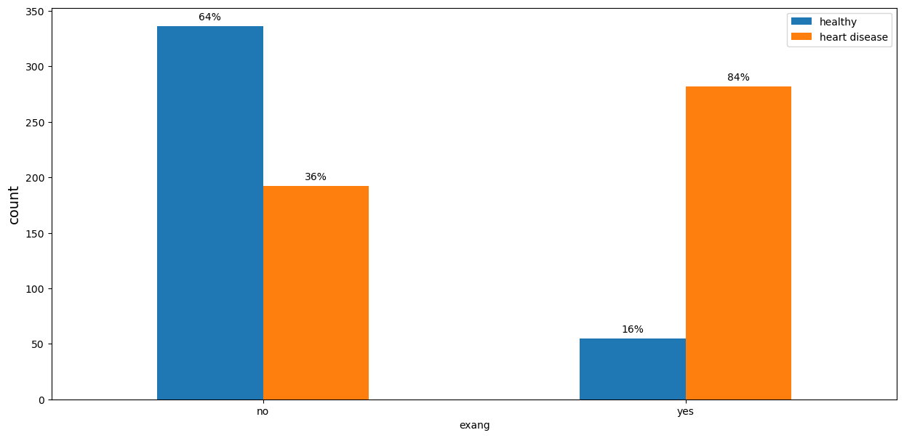
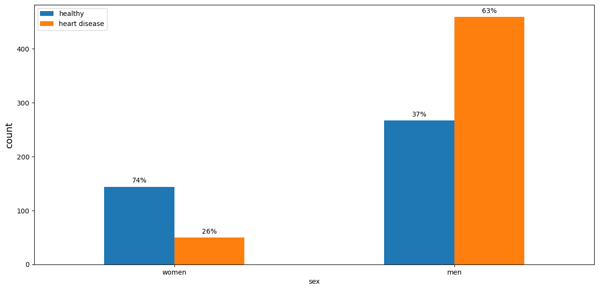
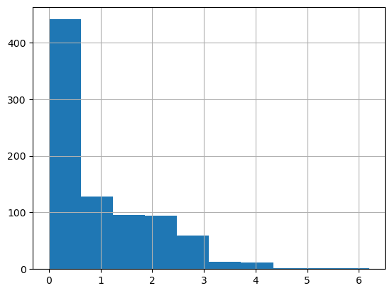
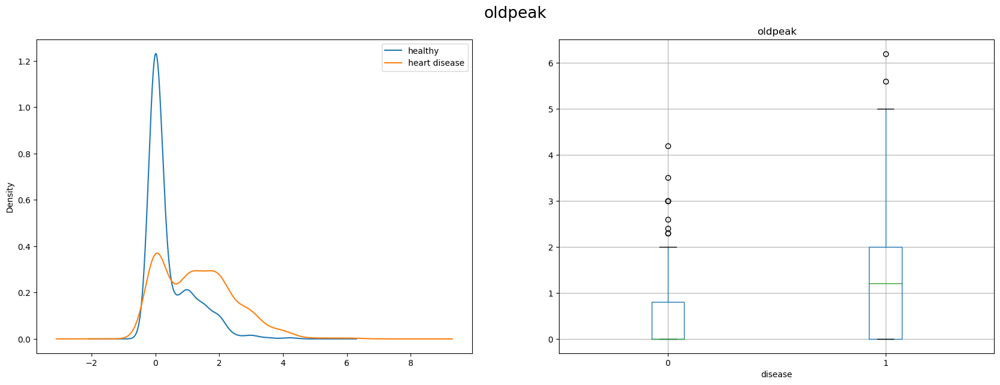
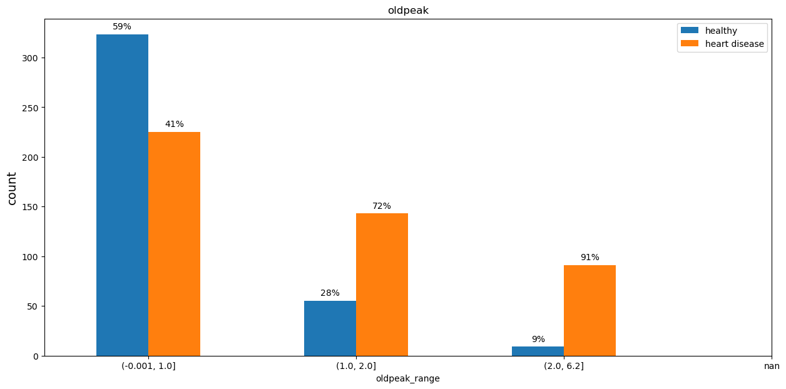

Data analysis, Random Forest and Logistic Regression with heart disease dataset
Imports
import pandas as pdimport numpy as npimport seaborn as snsimport matplotlib.pyplot as pltimport scipy.stats as statsimport palettableimport seaborn as snsfrom sklearn.ensemble import RandomForestRegressorfrom sklearn.impute import SimpleImputerfrom sklearn.model_selection import cross_val_score
The website contains 4 datasets concerning heart disease diagnosis.The data for these datasets was collected from the four following locations:
1. Hungarian Institute of Cardiology. Budapest: Andras Janosi, M.D.
2. University Hospital, Zurich, Switzerland: William Steinbrunn, M.D.
3. University Hospital, Basel, Switzerland: Matthias Pfisterer, M.D.
4. V.A. Medical Center, Long Beach and Cleveland Clinic Foundation: Robert Detrano, M.D., Ph.D.
There are 2 versions of each dataset:
Full dataset with 76 attributes
Dataset with 14 attributes
The reduced dataset exists because only the subset of 14 attributes has been used in prior reseach and experiments.
Files used for this project:
processed.switzerland.data
processed.cleveland.data
processed.hungarian.data
processed.va.data
I create a single dataset by combining these four.
trestbps - resting blood pressure (in mm Hg on admission to the hospital)
chol - cholesterol in mg/dl
thalach - maximum heart rate achieved
oldpeak - ST depression induced by exercise relative to rest. ‘ST’ relates to the positions on the electrocardiographic (ECG) plot.
ca - number of major vessels (0-3) colored by flourosopy. Fluoroscopy is one of the most popular non-invasive coronary artery disease diagnosis. It enables the doctor to see the flow of blood through the coronary arteries in order to evaluate the presence of arterial blockages.
Most of the patients with heart disease experienced angina during the exercise, while the majority in the healthy group had no such symptoms.
Code
plot_categorical(df_eda, 'exang', ['no', 'yes'])

Number of Blocked Vessels (‘ca’)
The chance of having heart disease increases proportionally to the number of blocked vessels. Patients with 0 blocked vessels have only 27% chance of having heart disease. The value reaches 85% chance for the group with 3 blocked vessels.
The majority of men in the dataset have heart disease, while only 26% of women are unhealthy.
Code
plot_categorical(df_eda, 'sex', ['women', 'men'])

Chest pain type (‘cp’)
Amongst the patients with no chest pain almost 80% had heart disease. Patients with the atypical angina had the lowest level of heart disease rate. Overall, we can not say if a chest pain can be considered as a risk factor for a heart disease.
There are some negative values. Replacing with nan.
Code
df_eda['oldpeak'] = df_eda['oldpeak'].apply(lambda x: np.nan if x <0else x)df_eda.oldpeak.hist()
<AxesSubplot: >

Oldpeak is another ECG parameter measuring ST depression during the exercise. It represents a distance on the ECG plot between specific points. There’s a notable difference in distributions between the groups. Sick people on average have higher value of the parameter.
Code
plot_numeric(df_eda, 'oldpeak', 'oldpeak')

Code
describe_numeric(df_eda, 'oldpeak')
oldpeak
healthy
sick
count
846.000000
387.000000
459.000000
mean
0.906265
0.425840
1.311329
std
1.071192
0.712184
1.153295
min
0.000000
0.000000
0.000000
25%
0.000000
0.000000
0.000000
50%
0.500000
0.000000
1.200000
75%
1.500000
0.800000
2.000000
max
6.200000
4.200000
6.200000
Patients with high olpeak values have higher chance of having herat disease.
Code
df_eda['oldpeak_range'] = pd.qcut(df_eda['oldpeak'], 5, duplicates ='drop')plot_categorical(df_eda, 'oldpeak_range', df_eda.oldpeak_range.unique().sort_values(), title ='oldpeak')

The slope of the peak exercise ST segment (‘slope’)
This is another ECG parameter, measured during the exercise. Almost 80% of the patients with ‘flat’ or ‘downslopping’ slope parameter had heart disease. Most of the people with the ‘upslopping’ slope were healthy.
The table demonstrates if a variable is statistically independent from another variable(label ‘True’). There are no independent variables for the target (disease) column.
T-test for numeric features
Two-tailed two sample t-testing is performed.
Null Hypothesis: The means of features for patients with heart disease and healthy patients are the same.
Alternative hypothesis: There are statistically significant differences in the feature means for the healthy and sick patients.
Code
from scipy.stats import ttest_inddef test_numeric(data = pd.DataFrame, col=str): data = data[~data[col].isna()] _, p = ttest_ind(data[col], data['disease'], equal_var=False)return pdef show_ttest_results(data=pd.DataFrame): results = [(col, test_numeric(data, col)) for col in ['chol', 'trestbps', 'age', 'oldpeak', 'thalach']]return pd.DataFrame(results, columns = ['Column', 'p-value'])
Code
show_ttest_results(df_no_duplicates)
Column
p-value
0
chol
0.000000e+00
1
trestbps
0.000000e+00
2
age
0.000000e+00
3
oldpeak
9.389716e-19
4
thalach
0.000000e+00
I reject null hypothesis and state that there are statistically significant differences in the feature means for the healthy and sick patients. Keeping all the features.
Machine learning algorithms like linear regression, logistic regression, neural network, etc. that use gradient descent as an optimization technique require data to be scaled.
Distance algorithms like KNN, K-means, and SVM are most affected by the range of features Normalization/Standardization.Therefore, I scale the data before employing a distance based algorithm so that all the features contribute equally to the result.
Code
from sklearn.preprocessing import MinMaxScalerdef scale(data=pd.DataFrame):return pd.DataFrame(MinMaxScaler().fit_transform(data), columns=data.columns)def plot_normalization(data_before=pd.DataFrame, data_after=pd.DataFrame, cols=str): fig, axs = plt.subplots(len(cols), 2, figsize = (25, 15))for i, col inenumerate(cols): sns.histplot(data_before[col], color='b', ax = axs[i, 0]) axs[i, 0].title.set_text(col +' before scaling') sns.histplot(data_after[col], color='r', ax = axs[i, 1]) axs[i, 1].title.set_text(col +' after scaling')plot_normalization(train_data, scale(train_data), ['chol', 'age', 'sex'])
There are many model parameters and they are not easy to choose, so I use the GridSearchCV tool in sklearn to help to complete the parameter selection. The main parameters include kernel, C and gamma
I use information from the random forest feature importance to do interpretation.
From the random forest feature importance information I conclude that the most important variables for predicting heart disease are:
Chest pain type (cp)
Maximum heart rate achieved (thalach)
Oldpeak
Age
Cholesterol
Meanwhile such parameters as blood sugar and the results of the electrocardiogram contributed the least to the heard disease prediction in the random forest model.
The most of the missing values flags were not important for the model.